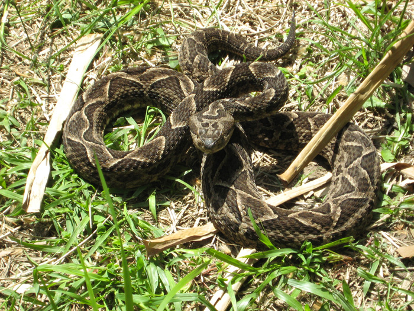

Home
Biomas
Informacion
Contacto
Yaguare o Jaguar
Ballena franca austral

Yarará (Bothrops alternatus)
Condor andino vultur gryphus
Otros animales autóctonos de Argentina
Carpincho
Puma
Ñandu
Pinguiño de magallanes
Aguará guazú
Guanaco
Ciervo de los pantano
Mono carayá o aullador
Osito lavador o mapache sudamericano (Procyon cancrivorus)